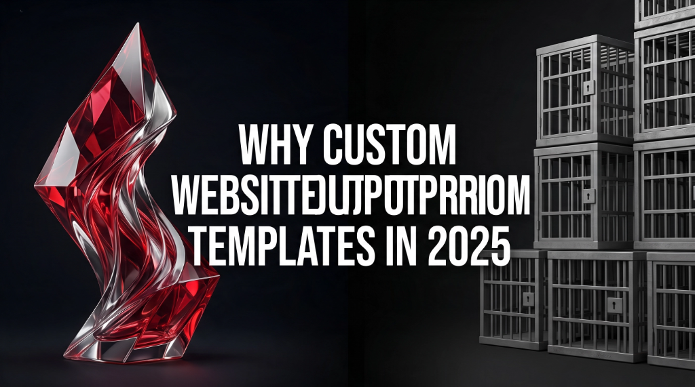

01 — Performance
Page Speed — The Hidden Revenue Killer
Template platforms ship with a universal codebase that has to accommodate thousands of different users. That means loading CSS for components you'll never use, JavaScript for plugins you didn't ask for, and images run through a generic optimization pipeline. The result is bloated code that slows your pages down.
Speed isn't a vanity metric. Google uses Core Web Vitals — LCP, FID, and CLS — as direct ranking signals. A slower site ranks lower. And the business impact is immediate: research shows that a 100ms delay in load time measurably reduces conversions. For a business doing $500K/year online, even a half-second of unnecessary load time can cost thousands in lost revenue.
Custom-built sites ship only the code they need. Every kilobyte is deliberate. Images are properly sized, fonts are subset, and there's no mystery plugin running on every page load. The result is a Lighthouse score that actually reflects your real user experience — not the ceiling a template platform imposes on you.
"The best code is no code. Custom development means you only pay the performance tax for what you actually need."
02 — Visibility
SEO Ceilings You Can't Break Through
Template platforms control your HTML output. You get a settings panel — not a codebase. That means your ability to implement technical SEO is bounded by what the platform exposes in its UI. Structured data (JSON-LD), custom canonical tags, server-side rendering for JavaScript-heavy pages, dynamic sitemaps, hreflang for international sites — these require direct access to the code.
Custom development removes the ceiling entirely. Your developers can implement the exact schema markup Google recommends for your industry, fine-tune meta output per page template, and architect your URL structure around how real users search — not how a platform generates slugs by default.
Custom Website
- Full control over HTML & meta output
- Custom JSON-LD structured data
- Optimised URL architecture
- Server-side rendering options
- Dynamic XML sitemaps
- Edge caching & CDN control
Template Platform
- Platform-generated HTML (limited)
- Basic or no structured data
- Platform-determined URL patterns
- Client-side only rendering
- Auto-generated sitemaps only
- Shared CDN infrastructure
03 — Identity
Design Freedom vs The Rigid Grid
Look at the image above. On the left: a flowing, unconstrained custom form — flexible architecture, unique scalability, unconstrained design. On the right: a rigid grid of identical boxes — repetitive pattern, constrained layout. That's not just a metaphor. It's a literal picture of what happens to your brand when you build on a template.
Every template starts from the same grid system. Every template user adjusts the same spacing controls, the same font size pickers, the same color swatches. The resulting websites look like cousins of each other — because they are. When a user lands on your site and it feels like every other site they visited this week, you've already lost the first-impression battle.
Custom development means your layout is invented for your brand, not borrowed from a marketplace. Your transitions, hover states, typography scale, and component patterns are all built to express exactly who you are. That distinctiveness builds trust — and trust drives conversions.
"A rigid grid forces every brand into the same box. Unconstrained architecture is where real brand identity lives."
04 — Growth
Scalability That Actually Scales
Template platforms scale their pricing as you grow. Add a storefront — upgrade your plan. Add a membership area — buy a plugin. Add a custom checkout flow — hire a developer to hack around the platform's original design decisions. Each addition costs more and delivers less.
A custom codebase is an asset you own outright. New features are additions, not workarounds. When your business pivots — new product line, international expansion, B2B portal, API integration — a custom site adapts because it was architected to. Template sites resist change precisely because they were designed for a specific use case at a specific scale.
The right question isn't "can I build this on a template?" It's "what will it cost me — in money, time, and performance — to build this on a template versus doing it right the first time?"
05 — Economics
The Real Total Cost of Ownership
The upfront cost of a template site is genuinely lower. But total cost of ownership over 3–5 years tells a different story. Platform subscription fees compound annually. Plugin costs stack up. Every developer you hire to customise your template bills hourly while fighting the platform's constraints. And lost SEO ranking is lost organic traffic — which you end up paying to replace with ads.
A custom-built site carries a higher upfront investment. But it has no platform tax, no per-feature upgrade costs, and a codebase that becomes cheaper to extend over time because there's no legacy template architecture to navigate around. For businesses serious about digital growth, the economics typically flip within 18–24 months.
06 — Decision Guide
Verdict: When to Choose What
Custom development isn't the right answer for every situation. Here's an honest breakdown:
| Scenario | Custom | Template |
|---|---|---|
| MVP or prototype (speed matters most) | Slower to launch | Better choice |
| Brand requiring unique visual identity | Better choice | Constrained |
| SEO-driven growth strategy | Better choice | Ceiling hit quickly |
| Complex features or integrations | Better choice | Expensive workarounds |
| Tight budget, simple brochure site | Over-engineered | Reasonable choice |
| Long-term scalability (3+ years) | Better choice | Compounding costs |
| Performance-critical (e-commerce, SaaS) | Better choice | Speed ceiling |
If your business is serious about digital growth — SEO, conversion rate, brand identity, or building a platform you can expand — custom development pays for itself. If you need something online fast without plans to scale it, a template is a legitimate starting point. Just go in with clear eyes about what it can and can't do for you long-term.
Ready to Build Without Limits?
Tell us about your project and we'll show you what a custom-built site can do that your template never could.